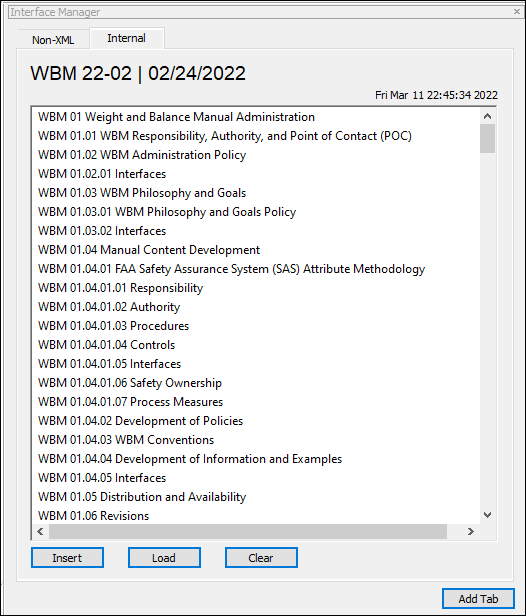
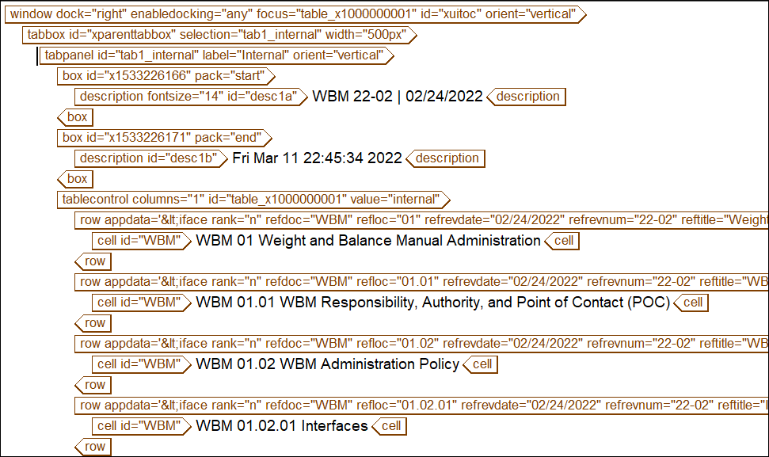
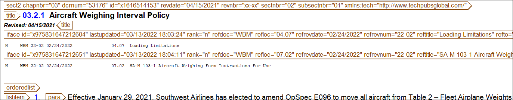

An interface occurs when multiple information sources share content, either explicitly or in concept. Documents are identified as having interfaces with other documents that describe similar content, even though the verbiage and context may not be identical.
Example of an Interfacing topic between multiple departments:
Aircraft Weight--the weight of an aircraft if required to be documented and affects multiple working groups.
Interfacing Topics uses the following components:
The Interface Manager is used to insert interface tags. Inserting interface tags via the Interface Manager ensures the tags are built using the most up to date content. The Interface Manager lists the sections that a manual can interface to.
The custom dialog boxes are created using XUI (XML-based User Interface) and JavaScript.
Screenshot of the custom dialog boxes using XML, XUI, and JavaScript.
The technical writer can insert the interface meta tag without manually typing any attributes (which reduces human error).
Example of an interface tag at a section level. This was inserted via the Interface Manager.
I have developed multiple automation functions to help manage and keep accurate information on interfaces.
This function looks for other manuals that interface to it and automatically insert them for the user.
##################################################
# MISSING EXTERNAL MUTUAL INTERFACES FUNCTIONS
##################################################
# ---------------------------------------------------
#Lists all Missing External Mutual Interfaces
# ---------------------------------------------------
function listMissingExternalIfaces() {
$localCount=0;
$knownmissingcount=0;
$countUpdatedBooks=0;
$childBookCount=0;
$matchingExternal="";
$iCurrentSection="";
$iPreviousSection="";
$ifacesNeedUpdating="false";
$findbook="";
$mutualexternalmissinginterfacesRun="";
$mutualexternalmissinginterfacesRunBOOK="";
delete($localIfaceOID);
delete($localIfacesLocationID);
delete($matchingRemote);
delete($localIfaceREFTO);
delete($knownMissingREFTO);
delete($knownMissingTEXT);
delete($knownMissingBOOKS);
delete($knownMissingParentxID);
delete($knownMissingLOC);
delete($knownMissingTITLE);
delete($knownMissingREVDATE);
delete($knownMissingREVNUM);
delete($printEBooks);
delete($printESectionTitle);
delete($printESectionText);
delete($knownMissingGOTOBOOK);
#index the manual
indexManual()
#change bookname to a string so can be passed into oid_attr
$findbook="".$manualBookName.""
#find only the external ifaces (no non-xml or internal ifaces)
if(oid_valid($ifaceOID[1])) {
for ($everyIface in $ifaceOID) {
if (oid_attr($ifaceOID[$everyIface],"refto")!="non-xml") {
if (tolower(oid_attr($ifaceOID[$everyIface],"refdoc"))!=$findbook) {
$localCount++
$localIfaceOID[$localCount]=$ifaceOID[$everyIface];
$localIfacesLocationID[$localCount]=$ifaceLocationID[$everyIface];
$localIfaceREFTO[$localCount]=$ifaceREFTO[$everyIface]
}
}
}
#open the interface datafile.
local $browseToDatafile = "P:/Public/Assets/ArbortextCatalogs/InterfaceDatafile/InterfaceDatafile.xml"
edit -nw -readonly -xml $browseToDatafile
#find all the children with $manualBookName == iface_loc @refdoc
$childBookCount=oid_find_child_attrs(oid_first(), matchingRemote, "refdoc", $findbook)
#for every remote iface, check if theres a matching iface in local book.
if (oid_valid($matchingRemote[1])) {
for ($eachRemote in $matchingRemote) {
#do not collect internal iface in remote.
if(oid_attr(oid_parent($matchingRemote[$eachRemote]),"xreflabel")!=$findbook) {
$matchingExternal="false";
if (oid_valid($localIfaceOID[1])) {
for ($eachLocal in $localIfaceOID){
if(oid_attr($matchingRemote[$eachRemote],"refto") != $localIfacesLocationID[$eachLocal]) {
#if it doesnt match -- do nothing, keep checking each local iface.
}
if (oid_attr($matchingRemote[$eachRemote],"refto") == $localIfacesLocationID[$eachLocal]) {
if($localIfaceREFTO[$eachLocal] == oid_attr($matchingRemote[$eachRemote],"iface_parentxID")){
$matchingExternal="true";
#there is a correct matching external mutual iface.
break;
}
}
}
}
#if went through all local ifaces, and no match was found.
if ($matchingExternal=="false") {
#these are the external ifaces that are missing ifaces in local current manual.
$knownmissingcount++
$knownMissingREFTO[$knownmissingcount]=oid_attr($matchingRemote[$eachRemote],"refto")
$knownMissingTEXT[$knownmissingcount]=toupper(oid_attr(oid_parent($matchingRemote[$eachRemote]),"xreflabel"))." ".oid_attr($matchingRemote[$eachRemote], "iface_parentNUMBER")." ".oid_attr($matchingRemote[$eachRemote], "iface_parentTITLE")
#parent BOOK (REFDOC)
$knownMissingBOOKS[$knownmissingcount]=oid_attr(oid_parent($matchingRemote[$eachRemote]),"xreflabel")
#eval "\n.REFDOC: ".$knownMissingBOOKS[$knownmissingcount] output=>*
#which book does the iface point to
$knownMissingGOTOBOOK[$knownmissingcount]=oid_attr($matchingRemote[$eachRemote],"refdoc")
#xID of parent section. (REFTO)
$knownMissingParentxID[$knownmissingcount]=oid_attr($matchingRemote[$eachRemote],"iface_parentxID")
#eval "\n.REFTO: ".$knownMissingParentxID[$knownmissingcount] output=>*
#parent section number (REFLOC)
$knownMissingLOC[$knownmissingcount]=oid_attr($matchingRemote[$eachRemote], "iface_parentNUMBER")
#eval "\n.REFLOC: ".$knownMissingLOC[$knownmissingcount] output=>*
#parent section title (REFTITLE)
$knownMissingTITLE[$knownmissingcount]=oid_attr($matchingRemote[$eachRemote], "iface_parentTITLE")
#eval "\n.REFTILE: ".$knownMissingTITLE[$knownmissingcount] output=>*
#parent revdate (REFREVDATE)
$knownMissingREVDATE[$knownmissingcount]=oid_attr(oid_parent($matchingRemote[$eachRemote]),"revdate")
#eval "\n.REFREVDATE: ".$knownMissingREVDATE[$knownmissingcount] output=>*
#parent revnumber (REFREVNUM)
$knownMissingREVNUM[$knownmissingcount]=oid_attr(oid_parent($matchingRemote[$eachRemote]),"revnum")
#eval "\n.REFREVNUM: ".$knownMissingREVNUM[$knownmissingcount] output=>*
}
}
}
file_close()
$mutualexternalmissinginterfacesRun="true";
$mutualexternalmissinginterfacesRunBOOK=$manualBookName;
#loop through mastertocOID so we can group by local section number/name.
#capture in separate array so do not eval Broken interfaces. * IMPORTANT
if (count($knownMissingREFTO)>0) {
for ($eachOID in $mastertocID) {
for($eachRemote2 in $knownMissingREFTO) {
if($mastertocID[$eachOID]==$knownMissingREFTO[$eachRemote2]) {
$ifacesNeedUpdating="true"
$countUpdatedBooks++
$printEBooks[$countUpdatedBooks]=$knownMissingBOOKS[$eachRemote2]
$printESectionTitle[$countUpdatedBooks]=$mastertocLOCATION[$eachOID]
$printESectionText[$countUpdatedBooks]=$knownMissingTEXT[$eachRemote2]
}
}
}
}
#build the report
eval "\n=====================================" output=>*
eval "\nMISSING EXTERNAL INTERFACES REPORT " output=>*
eval "\n".$manualTitle output=>*
eval "\nRevision Number: ".$manualRevnumber output=>*
eval "\nRevision Date: ".$manualRevdateCoverpage output=>*
eval "\nReport Run: ".time_date() output=>*
eval "\nRun by: ".username() output=>*
eval "\n-------------------------------------\n" output=>*
if($ifacesNeedUpdating=="true") {
eval "\n\nThe following ".toupper($manualBookName)." sections are missing external interfaces: \n" output=>*
qsort($printEBooks)
for($eachBook in $printEBooks) {
if ($printEBooks[$eachBook-1] != $printEBooks[$eachBook]){
eval toupper($printEBooks[$eachBook])." " output=>*
}
}
for($eachEIface in $printESectionTitle) {
$iSectionTitle = $printESectionTitle[$eachEIface]
$iCurrentSection = $iSectionTitle
#only eval section title if current and previous section names are different.
if($iCurrentSection != $iPreviousSection) {
eval "\n\n\n\n\n".$iCurrentSection."\n -Missing: [ ".$printESectionText[$eachEIface]." ]" output=>*
} else {
eval "\n -Missing: [ ".$printESectionText[$eachEIface]." ]" output=>*
}
$iPreviousSection = $iCurrentSection;
}
} else {
eval "\nThe ".toupper($manualBookName)." is NOT missing interfaces to any manuals. \n" output=>*
}
} else {
file_close()
message_box("No manuals interface to this manual.", 0x00, "Arbortext Error")
}
} else {
message_box("There are no interfaces in this manual.", 0x00, "Arbortext Error")
}
}
# ------------------------------------------------
#Updates Missing External Mutual Interfaces
# ------------------------------------------------
function updatemissingexternalifaces() {
#this function adds missing external ifaces automcatically.
#use the array from previous function.
$countCorrected=0;
$newExternalIface="";
$iSectionTitle2="";
$iCurrentSection2="";
$iPreviousSection="";
$viewingBookName="";
if ($mutualexternalmissinginterfacesRun=="true") {
#find the xreflabel. Confirm this is the same manual the report was run on.
$viewingBookName=oid_attr(oid_first_tag(), "xreflabel");
if ($mutualexternalmissinginterfacesRunBOOK==$viewingBookName) {
$IfaceMissingProceed=response("Confirm update all missing external interfaces?", "Yes", "No")
if($IfaceMissingProceed==1) {
eval "\n=====================================" output=>*
eval "\nUPDATE MISSING EXTERNAL INTERFACES REPORT " output=>*
eval "\n".$manualTitle output=>*
eval "\nRevision Number: ".$manualRevnumber output=>*
eval "\nRevision Date: ".$manualRevdateCoverpage output=>*
eval "\nReport Run: ".time_date() output=>*
eval "\nRun by: ".username() output=>*
eval "\n-------------------------------------\n" output=>*
if($knownmissingcount>0) {
eval "\n\n\n\nExternal Interfaces were added to the ".toupper($manualBookName)." at the following locations: " output=>*
#loop through entire toc and compare to array with known missing
for ($eachY in $mastertocID) {
for($eachZ in $knownMissingParentxID) {
if($mastertocID[$eachY]==$knownMissingREFTO[$eachZ]) {
if($knownMissingGOTOBOOK[$eachZ]==$manualBookName) {
$countCorrected++
#get the lastupdated timestamp.
getTimeDate("1")
sub("e","",username(),$empnum)
local $xid=$empnum+1111.time().$countCorrected
#build the iface tag.
$newExternalIface=""
#find the title and move cursor after title.
oid_find_children($mastertocOID[$eachY], firstTitleTag, "title", 0x01)
goto_oid(firstTitleTag[1], -3)
#insert the iface tag.
insert_string -markup "$newExternalIface"
#eval the section title the ifaces was inserted to.
$iSectionTitle2 = $mastertocLOCATION[$eachY]
$iCurrentSection2 = $iSectionTitle2
if($iCurrentSection2 != $iPreviousSection) {
eval "\n- ".$iCurrentSection2 output=>*
}
$iPreviousSection = $iCurrentSection2;
}
}
}
}
#eval total count.
eval "\n\n\n\nTotal number of External Interfaces added: ".$countCorrected output=>*
} else {
eval "\nThe ".toupper($manualBookName)." is NOT missing interfaces to any manuals. \n" output=>*
}
}
} else {
message_box("Data does not match current manual. \nRun List Missing External Interfaces.",0x00+0x10, "Arbortext Error")
}
} else {
message_box("Run List Missing External Interfaces.", 0x00, "Arbortext Error")
}
}
############################################################
#interface reporting functions
############################################################
#LIST INTERFACES - REVISED SECTIONS ONLY
#shows a interfaces for only revised sections.
function listRevisedIfacesReport() {
$listRevIface=0;
$sortTitle=0
$sortRIfaces=0;
delete($ifaceRevisionSectionTITLE);
delete($ifaceRevisionSectionOID);
delete($ifaceRevisedLASTUPDATED);
delete($ifaceRevisedREFDOC);
delete($ifaceRevisedREFDOC2);
delete($ifaceRevisedREFLOC);
delete($ifaceRevisedREFREVDATE);
delete($ifaceRevisedREFREVNUM);
delete($ifaceRevisedREFTITLE);
delete($sortMyManualTITLE);
delete($sortMyManualOID);
delete($sortMyInterfaces);
if (oid_valid($ifaceExistOID[1])) {
#find which ifaces with ifaceLocationOID that match the IfaceExistOID
for ($eacheOID in $ifaceExistOID) {
for ($eachiOID in $ifaceLocationOID) {
if($ifaceExistOID[$eacheOID]==$ifaceLocationOID[$eachiOID]) {
$listRevIface++
$ifaceRevisionSectionTITLE[$listRevIface]=$ifaceTITLE[$eachiOID];
$ifaceRevisionSectionOID[$listRevIface]=$ifaceLocationOID[$eachiOID]
$ifaceRevisedLASTUPDATED[$listRevIface] = oid_attr($ifaceOID[$eachiOID], "lastupdated");
$ifaceRevisedREFDOC[$listRevIface] = oid_attr($ifaceOID[$eachiOID], "refdoc");
$ifaceRevisedREFDOC2[$listRevIface] = oid_attr($ifaceOID[$eachiOID], "refdoc");#this used to qsort manual titles.
$ifaceRevisedREFLOC[$listRevIface] = oid_attr($ifaceOID[$eachiOID], "refloc");
$ifaceRevisedREFREVDATE[$listRevIface] = oid_attr($ifaceOID[$eachiOID], "refrevdate");
$ifaceRevisedREFREVNUM[$listRevIface] = oid_attr($ifaceOID[$eachiOID], "refrevnum");
$ifaceRevisedREFTITLE[$listRevIface] = oid_attr($ifaceOID[$eachiOID], "reftitle");
}
}
}
eval "\n================================" output=>*
eval "\nLIST INTERFACES - REVISED SECTIONS ONLY" output=>*
eval "\n".$manualTitle output=>*
eval "\nRevision Number: ".$manualRevnumber output=>*
eval "\nRevision Date: ".$manualRevdateCoverpage output=>*
eval "\nReport Run: ".time_date() output=>*
eval "\nRun by: ".username() output=>*
eval "\n--------------------------------" output=>*
eval "\n\n\nThis report lists interfaces for sections that were updated with this revision." output=>*
eval "\n\n\n\nTotal Interfaces: ".$listRevIface output=>*
eval "\n\n\nInterfaced Documents: \n" output=>*
#list all the manuals that are reference documents for this report.
qsort($ifaceRevisedREFDOC2)
for (manual in $ifaceRevisedREFDOC2){
if ($ifaceRevisedREFDOC2[manual-1] != $ifaceRevisedREFDOC2[manual]) {
eval $ifaceRevisedREFDOC2[manual]."\n" output=>*
}
}
#build an array of section titles only listed once and still in toc order (not qsort)
for (xy in $ifaceRevisionSectionOID) {
if ($ifaceRevisionSectionTITLE[xy-1] != $ifaceRevisionSectionTITLE[xy]) {
$sortTitle++
$sortMyManualTITLE[$sortTitle]=$ifaceRevisionSectionTITLE[xy]
$sortMyManualOID[$sortTitle]=$ifaceRevisionSectionOID[xy]
}
}
#find the ifaces per section. Qsort the list to alphabetize. Print section title and ifaces per section.
for ($eachc in $sortMyManualOID) {
delete($sortMyInterfaces);
$sortRIfaces=0;
for ($eachx in $ifaceRevisionSectionOID) {
if($sortMyManualOID[$eachc]==$ifaceRevisionSectionOID[$eachx]) {
$sortRIfaces++
$sortMyInterfaces[$sortRIfaces]=toupper($ifaceRevisedREFDOC[eachx])." ".$ifaceRevisedREFREVNUM[eachx]." ".$ifaceRevisedREFREVDATE[eachx]." ".$ifaceRevisedREFLOC[eachx]." ".$ifaceRevisedREFTITLE[eachx]."\n"
}
}
qsort($sortMyInterfaces);
eval "\n[".$sortMyManualTITLE[$eachc]."]\n" output=>*
for ($eachr in $sortMyInterfaces) {
eval $sortMyInterfaces[$eachr] output=>*
}
}
#if no interfaces exist in revised sections.
} else if (oid_valid($ifaceOID[1]) && !oid_valid($ifaceExistOID[1])){
message_box("There are no interfaces in revised sections.",0x30);
} else {
message_box("Index manual OR no interfaces exist in this manual.",0x30);
}
}